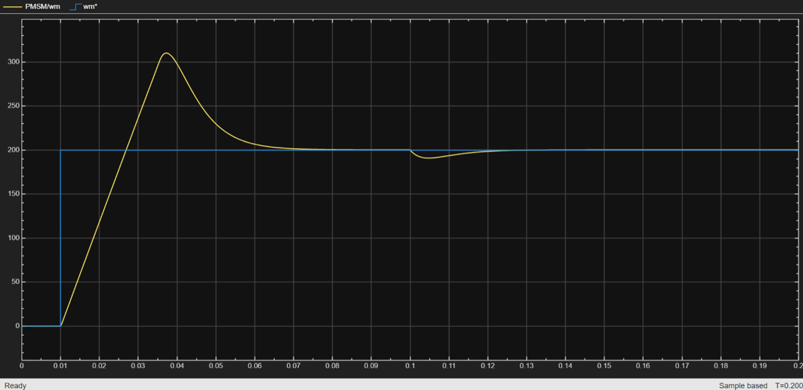
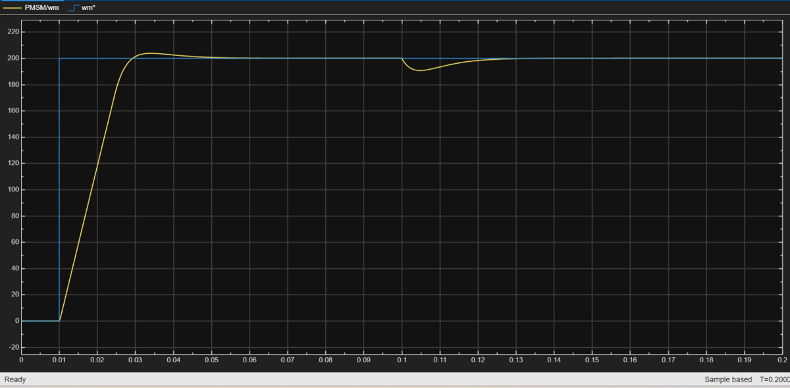
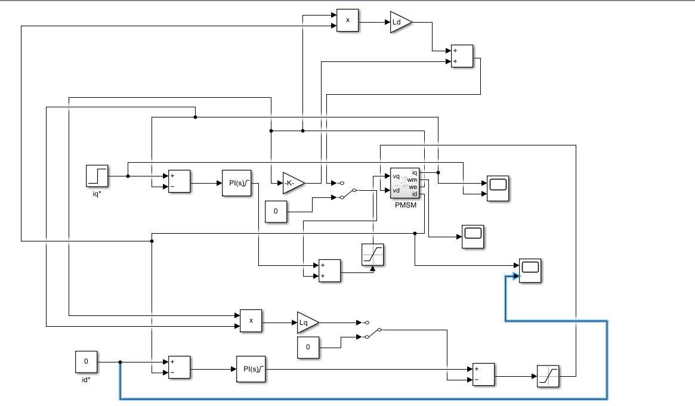

Commande vectorielle (FOC) d'un moteur synchrone à aimants permanents
Modèle du moteur dans le repère dq, boucles de courant réglées par compensation pôle-zéro (1 kHz) avec découplage et anticipation de la force contre-électromotrice, puis boucle de vitesse en cascade sous limites de tension et de courant. Chaque étape est validée contre une valeur calculée à la main avant de passer à la suivante.
| Grandeur vérifiée | Calcul | Simulation |
|---|---|---|
| Constante de temps de la boucle de courant | 0,159 ms | 0,160 ms |
| Sommet de vitesse, échelon de 20 rad/s | 22,71 rad/s | 22,75 rad/s |
| Creux sous un couple de charge de 0,05 N·m | 10,80 rad/s | 10,85 rad/s |
| Courant iq en régime chargé | 0,837 A | 0,84 A |
En saturation de courant, l'anti-windup par clamping réduit fortement le dépassement de vitesse :



En cours : défluxage, synthèse robuste H∞ par LMI de la boucle de vitesse, génération de code et essais sur carte STM32.